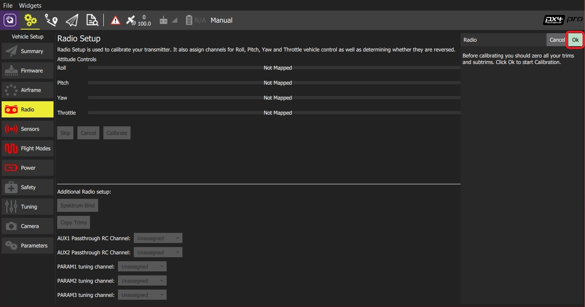
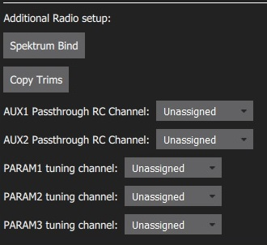
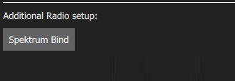
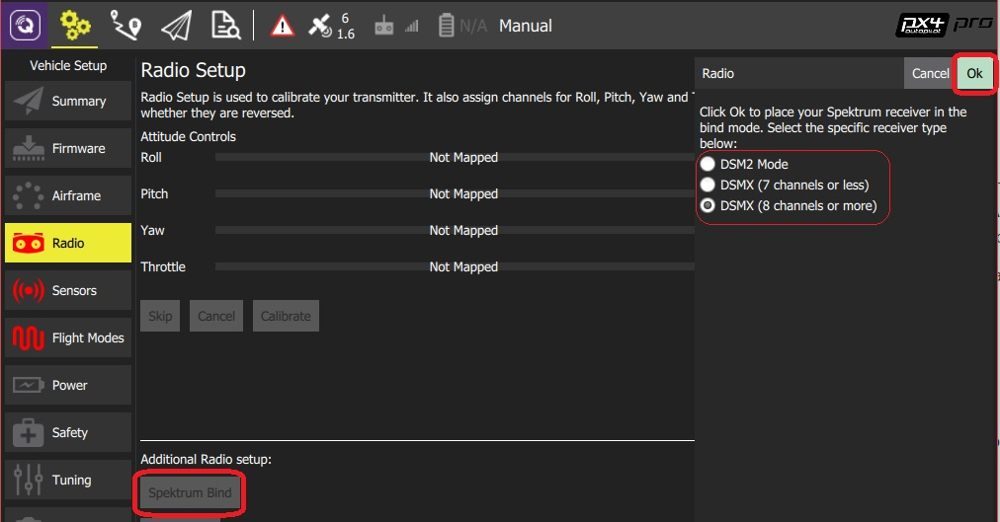
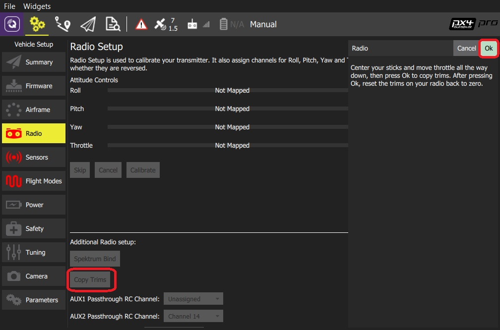
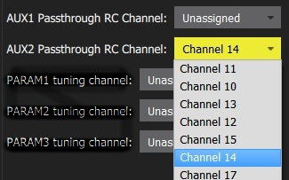
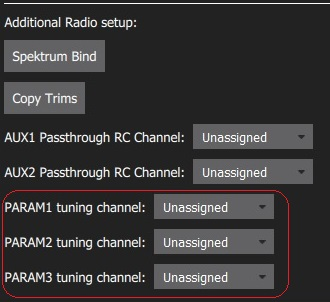
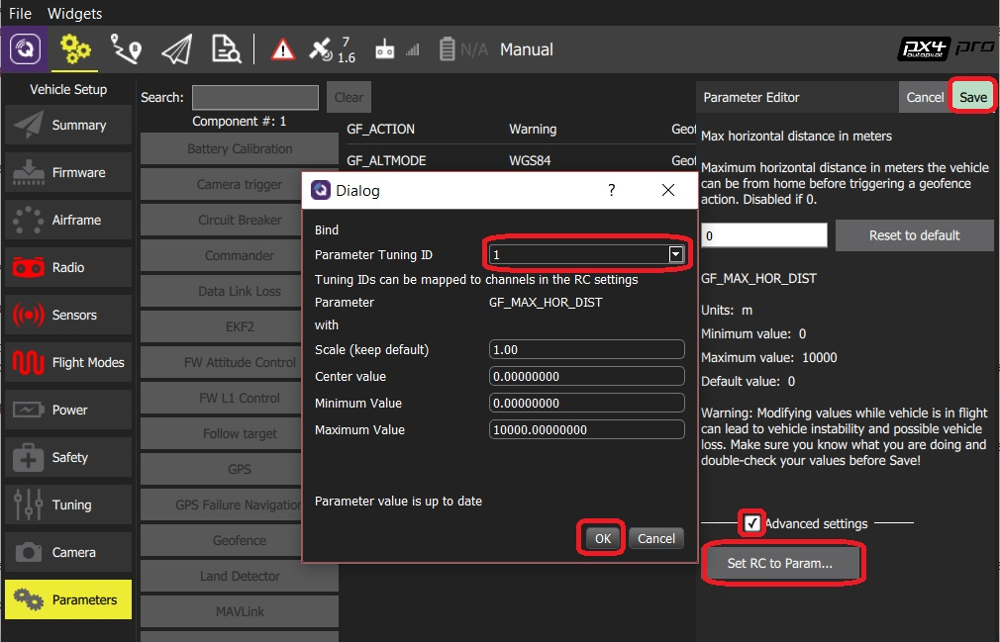

Radio Setup
Radio Setup is used to configure the mapping of your main transmitter attitude control sticks (roll, pitch, yaw, throttle) to channels, and to calibrate the minimum, maximum, trim and reverse settings for all other transmitter controls/RC channels.
The main calibration process is identical for PX4 and ArduPilot (a number of additional flight-controller specific settings/tools are detailed below).
Before you can calibrate the radio system the receiver and transmitter must be connected/bound. The process for binding a transmitter and receiver pair is hardware specific (see your manual for instructions).
Performing the Calibration
The calibration process is straightforward - you will be asked to move the sticks in a specific pattern that is shown on the transmitter diagram on the top right of the screen. Simply follow the instructions to complete calibration.
To calibrate the radio:
- Select the Gear icon (Vehicle Setup) in the top toolbar and then Radio in the sidebar.
- Turn on your RC transmitter.
Press OK to start the calibration.

The image above is for PX4 Pro. Calibration/top section is the same for both firmware, but the Additional Radio setup section will differ.
Set the transmitter mode radio button that matches your transmitter configuration (this ensures that QGroundControl displays the correct stick positions for you to follow during calibration).

Move the sticks to the positions indicated in the text (and on the transmitter image). Press Next when the sticks are in position. Repeat for all positions.
When prompted, move all other switches and dials through their full range (you will be able to observe them moving on the Channel Monitor).
Press Next to save the settings.
Radio calibration is demonstrated in the PX4 setup video here (youtube).
Additional Radio Setup
At the lower part of the Radio Setup screen is firmware-specific Additional Radio setup section. The options for each autopilot are shown below.
| PX4 | ArduPilot |
|---|---|
|  |  |
Spectrum Bind (ArduPilot/PX4)
Before you can calibrate the radio system the receiver and transmitter must be connected/bound. If you have a Spektrum receiver you can put it in bind mode using QGroundControl as shown below (this can be particularly useful if you don't have easy physical access to the receiver on your vehicle).
To bind a Spektrum transmitter/receiver:
- Select the Spektrum Bind button
- Select the radio button for your receiver
Press OK

Power on your Spektrum transmitter while holding down the bind button.
Copy Trims (PX4)
This setting is used to copy the manual trim settings from your radio transmitter so that they can be applied automatically within the autopilot. After this is done you will need to remove the manually set trims.
To copy the trims:
- Select Copy Trims.
- Center your sticks and move throttle all the way down.
Press Ok.

Reset the trims on your transmitter back to zero.
AUX Passthrough Channels (PX4)
AUX passthrough channels allow you to control arbitrary optional hardware from your transmitter (for example, a gripper).
To use the AUX passthrough channels:
- Map up to 2 transmitter controls to separate channels.
Specify these channels to map to the AUX1 and AUX2 ports respectively, as shown below. Values are saved to the vehicle as soon as they are set.

The flight controller will pass through the unmodified values from the specified channels out of AUX1/AUX2 to the connected servos/relays that drive your hardware.
Param Tuning Channels (PX4)
Tuning channels allow you to map a transmitter tuning knob to a parameter (so that you can dynamically modify a parameter from your transmitter).
This feature is provided to enable manual in-flight tuning.
The channels used for parameter tuning are assigned in the Radio setup (here!), while the mapping from each tuning channel to its associated parameter is defined in the Parameter editor.
To set up tuning channels:
- Map up to 3 transmitter controls (dials or sliders) to separate channels.
Select the mapping of PARAM Tuning Id to radio channels, using the selection lists. Values are saved to the vehicle as soon as they are set.

To map a PARAM tuning channel to a parameter:
- Open the Parameters sidebar.
- Select the parameter to map to your transmitter (this will open the Parameter Editor).
- Check the Advanced Settings checkbox.
Click the Set RC to Param... button (this will pop-up the foreground dialog displayed below)

- Select the tuning channel to map (1, 2 or 3) from the Parameter Tuning ID selection list.
- Press OK to close the dialog.
- Press Save to save all changes and close the Parameter Editor.
You can clear all parameter/tuning channel mappings by selecting menu Tools > Clear RC to Param at the top right of the Parameters screen.